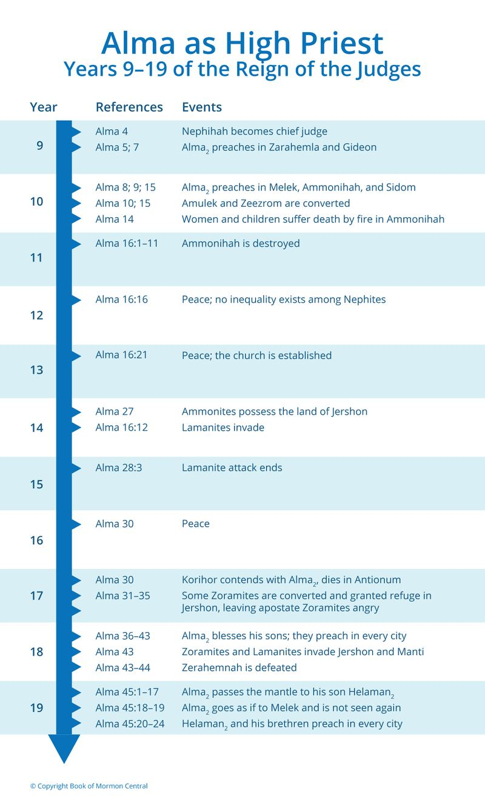

Alma and Amulek had been cast out of Ammonihah, and had fled to Sidom, where they encountered Zeezrom, who was sick. He, the former Nehorite accuser of Alma, was healed, converted, and baptized. He “began from that time forth to preach unto the people” (Alma 15:12). Eventually, Zeezrom served with Alma, two of his sons, and Amulek, in teaching the Zoramites in Antionum (Alma 31:6, 32).
This verse is one of many time markers in the Book of Mormon. It records the end of the tenth year of the reign of the judges. The text provides good information about some of the years in which Alma was the high priest during this time (Figure 1). We recall that he

Figure 1 John W. Welch, Greg Welch, "Alma as High Priest: Years 0–19 of the Reign of the Judges," in Charting the Book of Mormon, chart 25.
was the Chief Judge as well as the high priest for the first eight years of the Reign of Judges. He then gave up the judgment seat to focus on being the High Priest, and that happened in the ninth year. Alma immediately went to set the Church to rights, first in Zarahemla, then in Gideon. In Alma 8:2, we read, “And thus ended the ninth year of the Reign of the Judges over the people of Nephi,” and in 8:3, it is recorded that “… it came to pass in the commencement of the tenth year of the Reign of the Judges over the people of Nephi, that Alma departed from thence and took his journey over into the land of Melek.”
The tenth year began, then, as he is going to Melek to teach, but when did the tenth year end? It is recorded in this verse, Alma 15:19. “And thus ended the tenth year of the Reign of the Judges over the people of Nephi.” That is the end of chapter 15. They got out of prison in Ammonihah, and fled from there to the neighboring city of Sidom, where some of the persecuted male converts had fled.
Everything that was covered from the time Alma went to Melek, all the time in Ammonihah, all the horrifying events, and until Alma and Amulek returned to Alma’s home in Zarahemla, happened within one year. In fact, most of it happened within the second half of that year. A great deal of information is compressed here into a rather short time.
Chapter 16